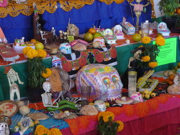
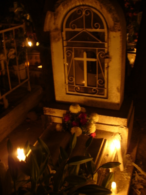
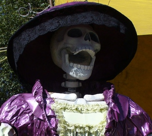
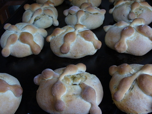

Dia de Muertos
De donde viene y sus caracteristicas del dia de muertos
El Día de Muertos es una celebración mexicana de origen mesoamericano que honra a los difuntos y coincide con las celebraciones católicas de Día de los Fieles Difuntos y Todos los Santos.
Es una festividad que se celebra en México y en algunos países de América Central, así como en muchas comunidades de los Estados Unidos, donde existe una gran población mexicana y centroamericana. La Unesco ha declarado la festividad como Patrimonio Cultural Inmaterial de la Humanidad.
Son relacionados con el mestizaje. Comprende rasgos culturales indígenas y españoles que al mezclarse dieron lugar a todos los ritos y ceremonias que se realizan alrededor de la festividad.
-
A continuación cinco de los principales aspectos de éstos días:
- Ofrendas como bienvenida.
La creencia popular es que las almas de los seres queridos que se nos fueron regresan de ultratumba durante el Día de Muertos. Por tal motivo, se les recibe con una ofrenda donde se coloca su comida y bebida favorita, fruta, calaveritas de dulce y, si fuese el caso, juguetes para los niños. No faltan las fotografías de los difuntos y las coloridas flores de cempasúchil.
 - Iluminando el camino de regreso a casa.
Una parte importante de ésta tradición implica visitar los cementerios. Ya sea durante el día o la noche, las familias acuden y colocan velas sobre las tumbas como una forma de iluminar el camino de las almas en su regreso a casa. Muchos pernoctan en los panteones que abren las 24 horas durante esas fechas. Otros más contratan grupos musicales que interpretan las canciones preferidas de los difuntos al pie de su sepulcro.
 - El humor mexicano frente a la muerte.
En México se percibe a la muerte de una manera muy peculiar. Los mexicanos utilizan la sátira para burlarse de ella. Ejemplo de ello es la popular “Catrina”: una calavera vestida con diferentes atuendos como muestra de la presencia de la muerte en todo lo cotidiano.
 - Las calaveras literarias.
En la celebración del Día de Muertos las calaveritas de dulce no son las únicas protagonistas. La cultura popular mexicana encuentra diversos medios de expresión para mostrar su sentir por esta tradición. Entre las más populares se encuentran las famosas calaveras literarias; se trata de versos rimados que ironizan situaciones de personajes populares e impopulares usando el tema de la muerte con una intención humorística. Cada año se promueve ésta actividad cultural mediante concursos en los que se premia la creatividad y la picardía de las composiciones.

- El pan de muerto que se comen los vivos.
Algo infaltable en cada cena y ofrenda es el delicioso pan de muerto. Los hay de diferentes estilos y formas. El más popular es redondo, cubierto de azúcar blanca o roja, con tiras que simulan huesitos. También están aquellos con formas de esqueletos o animales. Los ingredientes pueden varían dependiendo de la región, como es el caso de los panes cubiertos con ajonjolí, típicos de Xochimilco.
